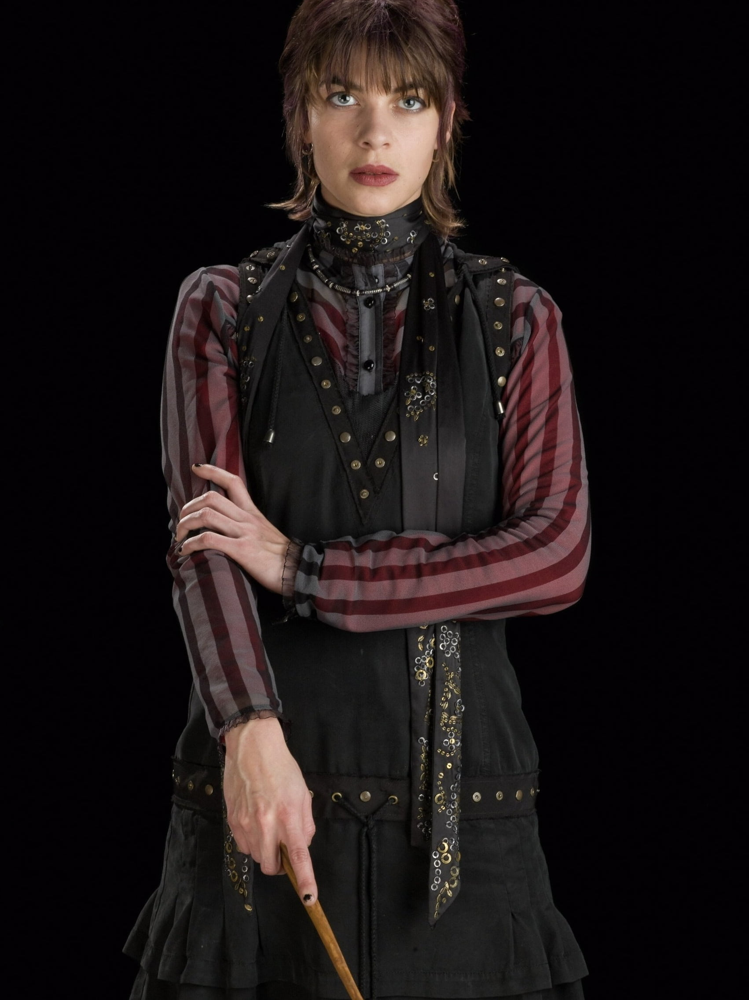
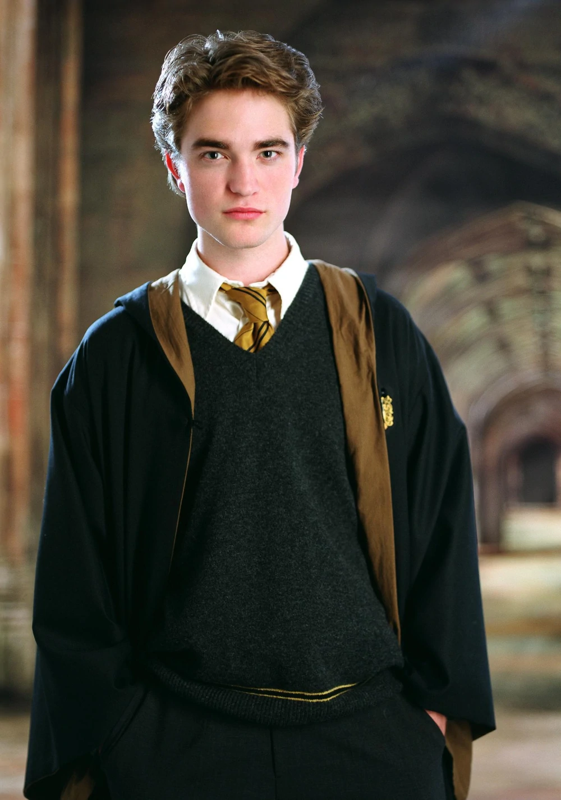
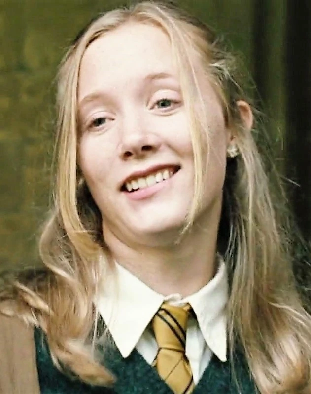

Música da Lufa-Lufa
Inclua aqui um trecho da música da Lufa-Lufa ou um link para a música que representa o espírito da casa.
Descrição da Casa
A Lufa-Lufa é conhecida por sua gentileza, paciência e lealdade. Os membros desta casa valorizam a amizade, o trabalho árduo e a compaixão pelos outros. Na Lufa-Lufa, você encontrará um ambiente caloroso e acolhedor, onde a amizade é celebrada e a bondade é valorizada.
Informações Extras
Os lufanos da Casa Lufa-Lufa são conhecidos por sua paciência e pela capacidade de encontrar beleza e bondade no mundo ao seu redor. Eles são excelentes ouvintes e estão sempre dispostos a ajudar os outros em momentos de dificuldade. Além disso, a Casa Lufa-Lufa tem uma forte tradição de produzir bruxos e bruxas habilidosos em cuidados com criaturas mágicas, herbologia e poções.
Fundador: Helga Hufflepuff (Lufa-Lufa)

Helga Hufflepuff, a fundadora da Casa Lufa-Lufa, era conhecida por sua generosidade, paciência e senso de igualdade. Ela valorizava a honestidade, a dedicação e a lealdade acima de todas as outras qualidades em um bruxo. Hufflepuff acreditava que todos mereciam uma chance justa e ofereceu seu conhecimento para ensinar a todos, independentemente de seu status de sangue ou habilidades mágicas. Sua casa era um lugar de aceitação e apoio, onde cada aluno era valorizado pelo que eles eram.
Personagens Relevantes da Casa Lufa-Lufa
-

Nymphadora Tonks
Uma bruxa habilidosa e metamorfomaga, conhecida por sua personalidade divertida e amor pela vida. Tonks é um verdadeiro representante das qualidades lufanas, mostrando compaixão e coragem em todos os momentos.
-

Cedric Diggory
Um estudante exemplar de Hogwarts, conhecido por sua gentileza e cavalheirismo. Cedric é lembrado por sua coragem durante o Torneio Tribruxo, representando com dignidade os valores da Lufa-Lufa.
-
Newton Scamander
Um renomado magizoologista autor de "Animais Fantásticos e Onde Habitam". Scamander é conhecido por seu amor e cuidado pelas criaturas mágicas, refletindo a forte conexão da Lufa-Lufa com o mundo animal.
-

Hannah Abbott
Uma bruxa corajosa e dedicada que se destacou em Herbologia durante seus anos em Hogwarts. Após se formar, Hannah tornou-se uma respeitada auror, demonstrando a coragem e a determinação típicas da Lufa-Lufa.